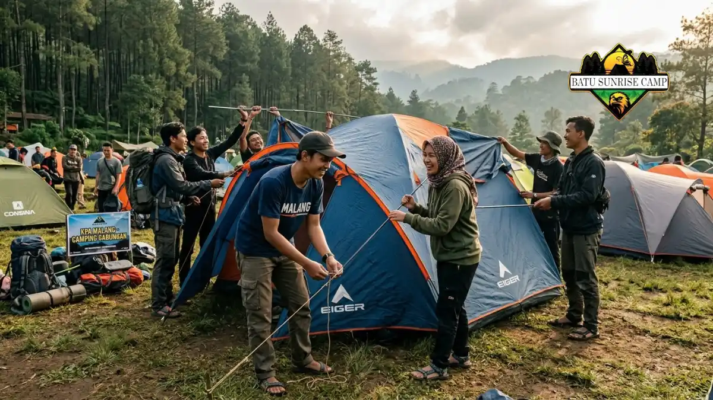

Area camping ground Coban Rondo terdiri dari lima zona resmi, yaitu Cemara, Damar, Rasamala, Mangir, dan Karpa, masing-masing dengan karakteristik lingkungan berbeda.
Apa Saja Nama Zona Camping Ground di Coban Rondo?
Zona camping ground di Coban Rondo terdiri dari lima area resmi bernama Cemara, Damar, Rasamala, Mangir, dan Karpa yang tersebar di kawasan wisata ini.
Kelima nama zona tersebut diambil dari jenis vegetasi yang banyak tumbuh di masing-masing area, mengingat kawasan Coban Rondo dikelilingi hutan pinus dan tanaman keras lainnya (Sumber: malangkab.go.id, data profil wisata 2026).
Pembagian zona semacam ini umum diterapkan di kawasan wisata alam berskala besar untuk memudahkan pengaturan pengunjung, terutama saat momen ramai seperti akhir pekan panjang atau event tahunan.
Setiap zona pada dasarnya menyediakan fasilitas dasar yang relatif sama, seperti akses ke toilet dan area parkir terdekat, meski suasana dan tingkat keramaian dapat berbeda tergantung lokasi zona terhadap pusat aktivitas wisata.
Bagaimana Karakteristik Zona Camping Cemara dan Damar?
Zona Cemara dan Damar umumnya berada di area yang lebih rindang dengan pepohonan tinggi, cocok bagi pengunjung yang mengutamakan suasana teduh dan tenang.
Kedua zona ini sering menjadi pilihan bagi keluarga kecil maupun kelompok pertemanan yang ingin merasakan suasana hutan pinus secara lebih dekat.
Suhu di area ini cenderung sejuk sepanjang hari karena naungan pepohonan yang cukup rapat, sehingga nyaman digunakan baik siang maupun malam hari.
Akses menuju fasilitas umum seperti toilet dan warung makan pada umumnya masih terjangkau dengan jarak berjalan kaki yang wajar.
Bagi yang mengutamakan privasi dan suasana lebih tenang dibanding zona lain yang lebih terbuka, kedua area ini bisa menjadi pertimbangan utama.
Bagaimana Karakteristik Zona Camping Rasamala, Mangir, dan Karpa?
Zona Rasamala, Mangir, dan Karpa umumnya menawarkan area yang lebih luas dan terbuka, sehingga sering digunakan untuk kegiatan komunitas atau rombongan berskala besar.
Karakter lahan yang lebih lapang membuat ketiga zona ini cocok menampung banyak tenda sekaligus, seperti pada kegiatan gathering komunitas otomotif atau acara sekolah yang melibatkan puluhan hingga ratusan peserta.
Area terbuka ini juga memudahkan aktivitas tambahan seperti senam pagi bersama, api unggun kelompok, atau kegiatan permainan luar ruangan yang membutuhkan ruang gerak lebih besar.
Meski lebih terbuka, ketiga zona ini tetap berada dalam kawasan wisata yang sama sehingga akses ke fasilitas umum seperti toilet dan mushola tetap tersedia dalam jarak yang wajar.

Rombongan camping di area terbuka Coban Rondo.
Zona Mana yang Cocok untuk Camping Keluarga?
Zona camping yang lebih rindang seperti Cemara dan Damar umumnya lebih cocok untuk camping keluarga karena suasananya tenang dan teduh.
Bagi keluarga dengan anak kecil, suasana yang tidak terlalu ramai dan naungan pepohonan yang cukup akan membantu menjaga kenyamanan selama bermalam.
Jarak yang relatif dekat ke fasilitas umum seperti toilet dan warung makan juga menjadi pertimbangan penting bagi keluarga yang membawa banyak perlengkapan.
Namun demikian, pemilihan zona tetap sebaiknya dikonfirmasi langsung ke pengelola saat kedatangan, mengingat ketersediaan tiap zona dapat berubah tergantung tingkat keramaian pengunjung pada hari tersebut.
Zona Mana yang Cocok untuk Camping Rombongan Besar?
Zona camping yang lebih luas seperti Rasamala, Mangir, dan Karpa umumnya lebih cocok untuk rombongan besar atau kegiatan komunitas.
Salah satu contoh nyata adalah kegiatan gathering komunitas otomotif yang pernah menampung lebih dari 100 kendaraan dalam satu lokasi camping ground yang sama, dengan fasilitas dasar seperti listrik dan toilet yang sudah termasuk dalam biaya kegiatan (Sumber: Kompasiana, laporan 2026).
Kapasitas lahan yang luas memungkinkan pengaturan tenda secara rapi tanpa membuat rombongan merasa berdesakan.
Bagi panitia acara komunitas atau sekolah, berkoordinasi lebih awal dengan pengelola terkait zona yang akan digunakan dapat membantu memastikan kapasitas lahan sesuai dengan jumlah peserta.
Kesimpulan
Lima zona camping ground di Coban Rondo, yaitu Cemara, Damar, Rasamala, Mangir, dan Karpa, memberi variasi suasana mulai dari area rindang yang cocok untuk keluarga hingga area terbuka yang ideal untuk rombongan besar.
Memilih zona yang tepat sesuai ukuran rombongan dan preferensi suasana akan membuat pengalaman camping lebih nyaman.
Untuk informasi lengkap mengenai fasilitas yang tersedia, baca artikel pillar kami: Fasilitas Camping di Coban Rondo Malang.